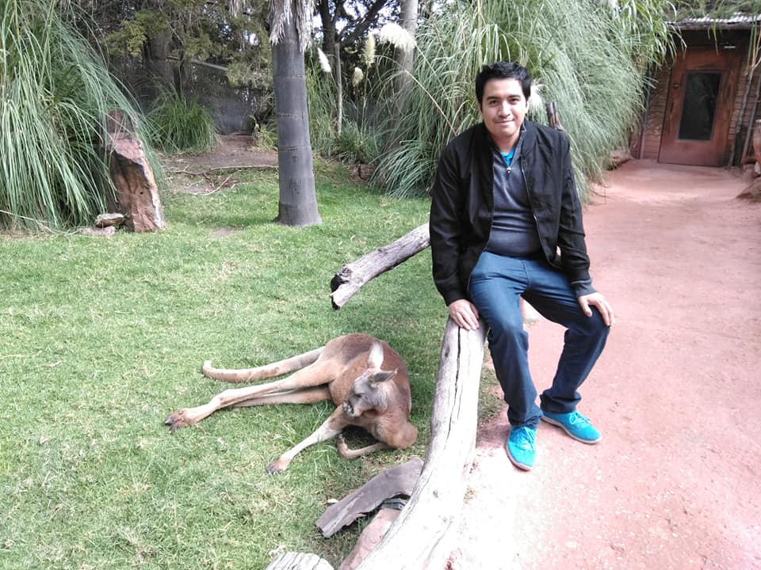

Framework design
Reusable Page Object Model, BasePage, fixtures, configuration, logging, screenshots, and reporting patterns.
Quality Engineering · Automation · Delivery Confidence
I help teams ship dependable software through automation strategy, risk-based testing, API validation, and maintainable quality processes.

About
I am a Senior QA Automation Engineer with 8+ years in Quality Assurance, currently focused on designing, developing, and maintaining automation solutions for enterprise web applications, Salesforce CRM, APIs, and internal systems.
My work combines automation architecture, reliable regression coverage, defect analysis, accessibility validation, and Agile collaboration with developers and Product Owners so teams can release with clearer evidence and lower risk.
Reusable Page Object Model, BasePage, fixtures, configuration, logging, screenshots, and reporting patterns.
UI, API, smoke, regression, functional, manual, and accessibility testing aligned to release risk.
Clear defects, maintainable suites, CI feedback, and production deployment support when teams need it.
Experience
More than tool usage: my focus is designing quality systems that remain readable, scalable, and useful for delivery teams.
Enterprise web applications · Salesforce CRM · Internal systems
Expertise
Grouped skills that reflect my current day-to-day work and the tools shown in the selected projects.
Selected work
Five focused projects that show how I structure automation frameworks, validate APIs, and build maintainable applications.
Reusable Selenium/Pytest framework for smoke coverage of web applications. It separates configuration, source code, and tests, with a runner and GitHub Actions workflow. The project demonstrates browser automation architecture, maintainable test organization, and recruiter-relevant SDET fundamentals: fixtures, execution entry points, CI readiness, and code structured for extension beyond a single scenario.
Modern UI automation framework built with Playwright, Pytest, and Page Object Model. It automates SauceDemo flows such as login, logout, cart updates, and checkout while using BasePage abstractions, centralized data, environment variables, logging, and failure screenshots. It shows that I can design scalable UI automation with clean responsibilities and practical evidence capture.
Production-inspired API testing framework for JSONPlaceholder using Python, Pytest, Requests, JSON Schema validation, reusable clients, fixtures, assertions, logging, HTML reporting, and GitHub Actions. It solves the need for service-level confidence beyond UI tests and demonstrates clean architecture, CI-ready execution, response validation, and test reporting that a QA team can inspect quickly.
Flask web application for creating, completing, restoring, and deleting tasks with persistent JSON storage. The architecture separates models, services, routes, templates, and static assets, making the code easier to test and extend. It includes Pytest coverage, formatting, linting, and GitHub Actions, showing that my QA mindset also informs how I build maintainable software.
Point-of-sale application built with Vite, TypeScript, React, shadcn-ui, Tailwind CSS, and Supabase. For recruiters, its value is the product scope: inventory, sales, and business workflow thinking rather than isolated tests. The current README is still template-heavy, so the portfolio presents it as a software-building example while flagging documentation as a priority improvement.
Repository documentation
These notes keep the portfolio honest without modifying the project repositories yet.
QA Selenium Framework and QuickSale POS need clearer documentation. QuickSale still uses a generated Lovable README; Selenium has little visible overview content.
Add problem statements, setup commands, architecture diagrams, test strategy, example reports, known limitations, and roadmap items tied to recruiter questions.
Add GitHub Actions runs, HTML reports, Playwright/Selenium failure screenshots, ToDo mobile/desktop views, and QuickSale POS inventory/sales screens.
Use CI status, Python/TypeScript version, Pytest, Playwright/Selenium, coverage where available, license, and last updated badges.
Contact
Available for conversations about QA automation, test strategy, and reliable delivery practices.
Apodaca, Nuevo León, Mexico
QA Automation · Test Strategy · Web Quality